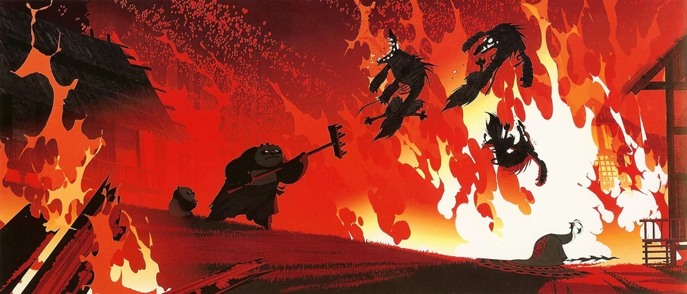

Mestre Po Ping (conhecido simplesmente como Po, e originalmente chamado Lotus) é o principal protagonista da franquia Kung Fu Panda. Ele é o filho adotivo do Sr. Ping e o filho biológico de Li Shan e da esposa de Li, bem como um dos alunos do Mestre Shifu no Palácio de Jade. Ele também é o lendário Guerreiro Dragão da lenda, e um mestre do estilo Panda de kung fu. Originalmente nascido em uma aldeia agrícola de seus pais biológicos, Po foi separado de sua família como resultado de um massacre instigado por Lord Shen. Ele acabou sendo encontrado pelo Sr. Ping, que o adotou, esperando que Po herdasse a loja de macarrão da família algum dia. No entanto, Po foi atraído pelo kung fu, e seu entusiasmo inabalável o levou a ser escolhido como o Guerreiro Dragão, após o qual ele começou a treinar com o Mestre Shifu. Embora desajeitado e inaceitável no início, Po perseverou e cumpriu o destino do Dragão Guerreiro ao derrotar Tai Lung e discernir o Pergaminho do Dragão, provando-se como um herói para todos, incluindo ele mesmo. Po nasceu como "Lotus" em uma remota vila agrícola povoada inteiramente por pandas. Lá, Lotus cresceu feliz com seu pai biológico Li Shan e sua mãe, até que um dia a vila foi invadida pelo pavão malvado e sedento de poder chamado Shen, que procurou evitar uma profecia eliminando qualquer ameaça ao seu futuro governo. Como último recurso para proteger seu filho, a mãe de Lotus o escondeu em uma caixa de rabanetes. Eles compartilham um adeus emocional, antes que ela seja tragicamente morta por Shen e seu exército de lobos. A caixa em que Lotus estava acabou sendo enviada para longe, para o Vale da Paz, onde o dono de uma loja de macarrão, Sr. Ping, encontrou o bebê panda, que havia comido os rabanetes. Embora relutante em aceitá-lo no início, o Sr. Ping, ao perceber que ninguém estava procurando por ele, acabou aceitando-o dando-lhe o nome de "Xiao Po" e criando-o como seu próprio filho. Desde então, Po foi criado felizmente na loja de macarrão, aprendendo tudo o que sabia como fabricante de macarrão de seu pai adotivo. Até os eventos do segundo filme, Po nunca questionou o Sr. Ping sobre se ele foi adotado, pois pai e filho compartilhavam um profundo amor e respeito mútuos. Ele, no entanto, carregava dúvidas de que eles estavam relacionados.

Os criadores da franquia do filme foram Ethan Reiff e Cyrius Voris, produzido pela DreamWorks. Inicialmente, o filme era para ser simplesmente uma paródia, mas uns dos criadores resolveu trabalhar sério em seu projeto, fazendo uma viagem até a China para conhecer e absorver um pouco da cultura chinesa e as origens do kung fu.